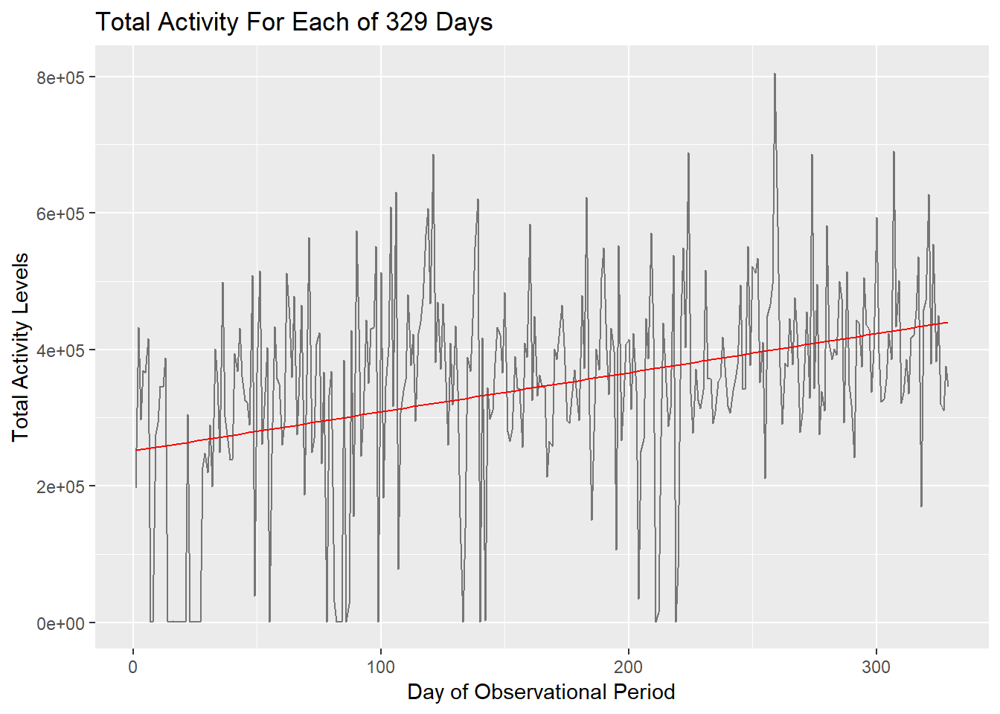
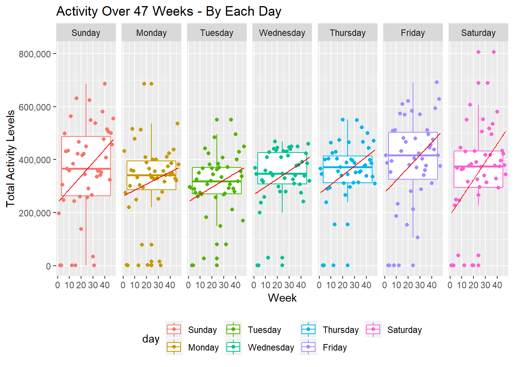
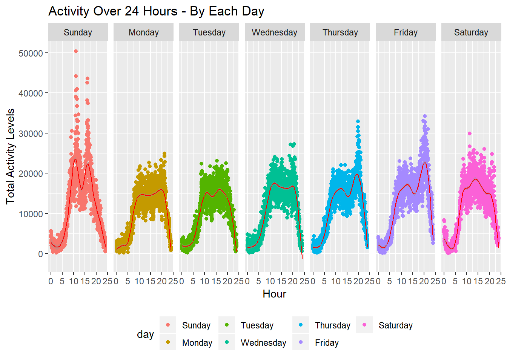

Accelerometers have become an increasingly important tool for studying around-the-clock physical activity in studies. Levels of activities can be counted by measuring voltage signals on a patient within a short span of time. The goal of this project is to summarize trends and patterns from data collected on a male patient who wore an accelerometer device that recorded his physical activity for several months.
Researchers specifically want to understand his patterns of physical activity over periods of time; thus, some important questions to explore include, but are not limited to:
The patient is a 63-year-old male individual with congestive heart failure (CHF). The data for the patient can be found here. The variables in the spreadsheet are:
week: Number indicating week of observational period
day: Day of the week
activity.*: Activity count (measure of activity levels). Numbers replacing asterisk indicate the minute of day on which the activity level was captured (e.g., activity.3 contains the activity count for the 3rd minute after midnight for that particular day)
After importing the data, we clean up the data by renaming variables, ordering the data by day of the week (Sunday first), creating a variable that indicates each day of the observational period (overall_days), and creating a variable that indicates each minute of the observational period (overall_minutes).
activity = read_csv("data/p8105_mtp_data.csv", col_types = cols()) %>%
janitor::clean_names() %>%
mutate(day = fct_relevel(day, str_c(c("Sunday", "Monday", "Tuesday", "Wednesday",
"Thursday", "Friday", "Saturday")))) %>%
arrange(week, day) %>%
mutate(overall_day = seq(1:nrow(.))) %>%
gather(key = minute_of_day, value = activity_count, activity_1:activity_1440) %>%
separate(minute_of_day, into = c("activity", "minute_of_day"), sep = "_") %>%
select(-activity) %>%
mutate(minute_of_day = as.numeric(minute_of_day)) %>%
arrange(week, day, overall_day) %>%
mutate(overall_minutes = seq(1:nrow(.))) We can examine the head and tail ends of the dataset (shown below) to make sure that we cleaned our data properly.
kable(head(activity))| week | day | overall_day | minute_of_day | activity_count | overall_minutes |
|---|---|---|---|---|---|
| 1 | Sunday | 1 | 1 | 1 | 1 |
| 1 | Sunday | 1 | 2 | 1 | 2 |
| 1 | Sunday | 1 | 3 | 1 | 3 |
| 1 | Sunday | 1 | 4 | 1 | 4 |
| 1 | Sunday | 1 | 5 | 1 | 5 |
| 1 | Sunday | 1 | 6 | 1 | 6 |
kable(tail(activity))| week | day | overall_day | minute_of_day | activity_count | overall_minutes |
|---|---|---|---|---|---|
| 47 | Saturday | 329 | 1435 | 1 | 473755 |
| 47 | Saturday | 329 | 1436 | 1 | 473756 |
| 47 | Saturday | 329 | 1437 | 1 | 473757 |
| 47 | Saturday | 329 | 1438 | 1 | 473758 |
| 47 | Saturday | 329 | 1439 | 1 | 473759 |
| 47 | Saturday | 329 | 1440 | 1 | 473760 |
I run a summary function to examine the distribution of the variables. We can see that the patient was studied over 473,760 minutes (47 weeks; 329 days). His activity levels ranged from 1 to 10,417 units; 240.3 units was the mean. There were no activity levels below 1 unit, signifying that 1 unit could have been an indication of extremely minimal or no activity in this case, or that the accelerometer device was removed at this time. The mean for activity count (240.3) is moderately greater than its media (43.0), suggesting that activity count is right-skewed; we are probably more likely to encounter lower levels of activity levels rather than higher levels.
(summary(activity))## week day overall_day minute_of_day
## Min. : 1 Sunday :67680 Min. : 1 Min. : 1.0
## 1st Qu.:12 Monday :67680 1st Qu.: 83 1st Qu.: 360.8
## Median :24 Tuesday :67680 Median :165 Median : 720.5
## Mean :24 Wednesday:67680 Mean :165 Mean : 720.5
## 3rd Qu.:36 Thursday :67680 3rd Qu.:247 3rd Qu.:1080.2
## Max. :47 Friday :67680 Max. :329 Max. :1440.0
## Saturday :67680
## activity_count overall_minutes
## Min. : 1.0 Min. : 1
## 1st Qu.: 1.0 1st Qu.:118441
## Median : 43.0 Median :236881
## Mean : 240.3 Mean :236881
## 3rd Qu.: 335.0 3rd Qu.:355320
## Max. :10417.0 Max. :473760
## We use the ggplot function to determine whether the patient increased activity levels over the span of the observational period; we run a regression line through the plots and can see that activity levels seem to increase over time.
total_activity =
activity %>%
group_by(week, day, overall_day) %>%
summarise(total_per_day = as.integer(sum(activity_count)))
kable(head(total_activity, 15))| week | day | overall_day | total_per_day |
|---|---|---|---|
| 1 | Sunday | 1 | 196937 |
| 1 | Monday | 2 | 432750 |
| 1 | Tuesday | 3 | 297427 |
| 1 | Wednesday | 4 | 369435 |
| 1 | Thursday | 5 | 366178 |
| 1 | Friday | 6 | 416165 |
| 1 | Saturday | 7 | 1440 |
| 2 | Sunday | 8 | 1440 |
| 2 | Monday | 9 | 275174 |
| 2 | Tuesday | 10 | 293201 |
| 2 | Wednesday | 11 | 346427 |
| 2 | Thursday | 12 | 345304 |
| 2 | Friday | 13 | 387241 |
| 2 | Saturday | 14 | 1492 |
| 3 | Sunday | 15 | 1440 |
act_graph =
activity %>%
group_by(week, day, overall_day) %>%
summarise(total_per_day = as.integer(sum(activity_count))) %>%
ggplot(aes(y = total_per_day, x = overall_day)) +
geom_line(alpha = 0.5) +
geom_smooth(method = "lm", size = 0.5, color = "red", se = FALSE) +
labs(
title = "Total Activity For Each of 329 Days",
x = "Day of Observational Period",
y = "Total Activity Levels"
)
act_graph
I run a formal statistical analysis to determine whether the association between total activity levels per day and the day of the observational period (i.e., time) is statistically significant. From the output below, we see that the parameter estimate for overall_day is around 573; thus, for every 1 day of the observational period that passes, the patient increased his total activity levels by 573 units, on average. The p-value is less than 0.05, indicating that this association is statistically significant - the patient did increase overall activity levels over time.
regression <- lm(total_activity$total_per_day ~ total_activity$overall_day)
tidy(summary(regression))## # A tibble: 2 x 5
## term estimate std.error statistic p.value
## <chr> <dbl> <dbl> <dbl> <dbl>
## 1 (Intercept) 251538. 15716. 16.0 5.54e-43
## 2 total_activity$overall_day 573. 82.6 6.94 2.10e-11I now want to examine whether there is any variation in activity levels by day of the week. The median activity levels of all 47 weeks for each day of the week is included below. We notice that Friday, Saturday, Thursday, and Sunday have the highest median activity levels.
median_act =
total_activity %>%
group_by(day) %>%
summarise(median_per_day = as.integer(median(total_per_day)))
kable(median_act[order(-median_act$median_per_day),])| day | median_per_day |
|---|---|
| Friday | 416165 |
| Saturday | 375047 |
| Thursday | 371230 |
| Sunday | 365415 |
| Wednesday | 346681 |
| Monday | 341906 |
| Tuesday | 319019 |
I plot the activity levels over 47 weeks for each day to visually examine the impact of day of the week on activity levels. We can see that the slope of the regression lines seems to be higher for Friday, Saturday, and Sunday, suggesting that the patient is more active during those days and that our plots match what we discovered from our table above.
daily_act =
activity %>%
group_by(week, day, overall_day) %>%
summarise(total_per_day = as.integer(sum(activity_count))) %>%
ggplot(aes(x = week, y = total_per_day, color = day)) +
geom_boxplot() +
geom_point() +
labs(
title = "Activity Over 47 Weeks - By Each Day",
x = "Week",
y = "Total Activity Levels"
) +
scale_x_continuous(breaks = c(0, 10, 20, 30, 40, 50),
labels = c("0", "10", "20", "30", "40", "50")) +
scale_y_continuous(labels = c("0", "200,000", "400,000", "600,000", "800,000")) +
geom_smooth(method = "lm", size = 0.5, color = "red", se = FALSE) +
facet_grid(~day) +
theme(legend.position = "bottom")
daily_act
I run a formal statistical analysis to determine whether activity levels varied by day of the week, after adjusting for the day of the observational period (i.e., time). Sunday was used as the reference category. From the output below, we see that the parameter estimates for most of the days are negative, suggesting a lower activity level for most of the days in comparison to Sunday. Furthermore, the parameter estimates for total_activity$dayMonday to total_activity$daySaturday all have a p-value above 0.05, indicating that the association is not statistically significant, after adjusting for time. Thus, there was not a statistically significant difference in activity levels by day of the week, after adjusting for time.
regression2 <- lm(total_activity$total_per_day ~ total_activity$day + total_activity$week)
tidy(summary(regression2))## # A tibble: 8 x 5
## term estimate std.error statistic p.value
## <chr> <dbl> <dbl> <dbl> <dbl>
## 1 (Intercept) 263730. 24786. 10.6 7.56e-23
## 2 total_activity$dayMonday -42278. 29138. -1.45 1.48e- 1
## 3 total_activity$dayTuesday -52483. 29138. -1.80 7.26e- 2
## 4 total_activity$dayWednesday -19462. 29138. -0.668 5.05e- 1
## 5 total_activity$dayThursday -3654. 29138. -0.125 9.00e- 1
## 6 total_activity$dayFriday 30313. 29138. 1.04 2.99e- 1
## 7 total_activity$daySaturday -6882. 29138. -0.236 8.13e- 1
## 8 total_activity$week 3994. 574. 6.96 1.97e-11Lastly, I create 24-hour activity profiles for each day of the week aggregating data from all 47 weeks. We see bimodal distributions for most of the days, suggesting that the patient was more active during the mornings and in the evenings. Secondly, we see higher peaks for Thursday, Friday, and Sunday, indicating heavier activity levels during this time. As noted above though, day of the week was not statistically associated with difference in activity levels, after adjusting for time.
minute_act =
activity %>%
group_by(minute_of_day, day) %>%
summarise(total_per_day = as.integer(sum(activity_count))) %>%
ggplot(aes(x = minute_of_day / 60, y = total_per_day, color = day)) +
geom_point() +
labs(
title = "Activity Over 24 Hours - By Each Day",
x = "Hour",
y = "Total Activity Levels"
) +
geom_smooth(size = 0.5, color = "red") +
facet_grid(~day) +
theme(legend.position = "bottom")
minute_act## `geom_smooth()` using method = 'gam' and formula 'y ~ s(x, bs = "cs")'